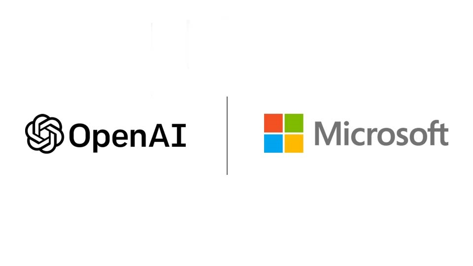

<DOCUMENT>
<TYPE>EX-99.2
<SEQUENCE>3
<FILENAME>msft-ex99_2.htm
<DESCRIPTION>EX-99.2
<TEXT>
<!-- DFIN ActiveDisclosure (SM) HTML Document - http://www.dfinsolutions.com/ --><!-- Creation Date :2025-10-29T14:04:13.0252+00:00 --><!-- Copyright (c) 2025 Donnelley Financial Solutions, Inc. All Rights Reserved. -->
<html>
 <head>
  <title>EX-99.2</title>
 </head>
 <body style="padding:8px;margin:auto!important;z-index:0;-webkit-text-size-adjust:100%;position:relative;">
  <div style="padding-top:0.5in;z-index:2;min-height:0.6in;position:relative;box-sizing:border-box;"><p style="font-size:10pt;margin-top:0;font-family:Times New Roman;margin-bottom:0;text-align:left;margin-left:0;margin-right:0;"><font style="white-space:pre-wrap;font-size:10pt;font-family:Arial;font-kerning:none;min-width:fit-content;">&#160;</font></p></div>
  <div class="main-content-container" style="z-index:5;position:relative;"><p style="font-size:10pt;margin-top:0;font-family:Times New Roman;margin-bottom:0;text-align:right;"><font style="color:#666666;white-space:pre-wrap;font-size:10pt;font-family:Arial;font-kerning:none;min-width:fit-content;">Exhibit 99.2</font></p><p style="font-size:10pt;margin-top:12pt;font-family:Times New Roman;margin-bottom:0;text-align:left;"><font style="color:#666666;white-space:pre-wrap;font-size:10pt;font-family:Arial;font-kerning:none;min-width:fit-content;">The next chapter of the Microsoft&#x2013;OpenAI partnership</font></p><p style="font-size:10pt;margin-top:12pt;font-family:Times New Roman;margin-bottom:0;text-align:left;"><font style="color:#666666;white-space:pre-wrap;font-size:10pt;font-family:Arial;font-kerning:none;min-width:fit-content;">Oct 28, 2025 | </font><font><font style="white-space:pre-wrap;font-size:10pt;font-family:Arial;font-kerning:none;min-width:fit-content;">Microsoft Corporate Blogs</font></font></p><p style="font-size:10pt;margin-top:0;font-family:Times New Roman;margin-bottom:0;text-align:left;"><font style="white-space:pre-wrap;font-size:12pt;font-family:Arial;font-kerning:none;min-width:fit-content;">&#160;</font></p><p style="font-size:10pt;margin-top:0;font-family:Times New Roman;margin-bottom:0;text-align:center;"></p><p style="font-size:10pt;margin-top:0;font-family:Times New Roman;margin-bottom:0;text-align:left;"><font style="white-space:pre-wrap;font-size:12pt;font-family:Arial;font-kerning:none;min-width:fit-content;">&#160;</font></p><p style="font-size:10pt;margin-top:0;font-family:Times New Roman;margin-bottom:0;text-align:left;"><font style="color:#666666;white-space:pre-wrap;font-size:10pt;font-family:Arial;font-kerning:none;min-width:fit-content;">Since 2019, Microsoft and OpenAI have shared a vision to advance artificial intelligence responsibly and make its benefits broadly accessible. What began as an investment in a research organization has grown into one of the most successful partnerships in our industry. As we enter the next phase of this partnership, we&#x2019;ve signed a new definitive agreement that builds on our foundation, strengthens our partnership, and sets the stage for long-term success for both organizations.</font></p><p style="font-size:10pt;margin-top:12pt;font-family:Times New Roman;margin-bottom:0;text-align:left;"><font style="color:#666666;white-space:pre-wrap;font-size:10pt;font-family:Arial;font-kerning:none;min-width:fit-content;">First, Microsoft supports the OpenAI board moving forward with formation of a public benefit corporation (PBC) and recapitalization. Following the recapitalization, Microsoft holds an investment in OpenAI Group PBC valued at approximately $135 billion, representing roughly 27 percent on an as-converted diluted basis, inclusive of all owners &#x2013; employees, investors, and the OpenAI Foundation. Excluding the impact of OpenAI&#x2019;s recent funding rounds, Microsoft held a 32.5 percent stake on an as-converted basis in the OpenAI for-profit.</font></p><p style="font-size:10pt;margin-top:12pt;font-family:Times New Roman;margin-bottom:0;text-align:left;"><font style="color:#666666;white-space:pre-wrap;font-size:10pt;font-family:Arial;font-kerning:none;min-width:fit-content;">The agreement preserves key elements that have fueled this successful partnership &#x2013; meaning OpenAI remains Microsoft&#x2019;s frontier model partner and Microsoft continues to have exclusive IP rights and Azure API exclusivity until Artificial General Intelligence (AGI).</font></p><p style="font-size:10pt;margin-top:12pt;font-family:Times New Roman;margin-bottom:0;text-align:left;"><font style="color:#666666;white-space:pre-wrap;font-size:10pt;font-family:Arial;font-kerning:none;min-width:fit-content;">It also refines and adds new provisions that enable each company to independently continue advancing innovation and growth.</font></p><p style="font-size:10pt;margin-top:12pt;font-family:Times New Roman;margin-bottom:0;text-align:left;"><font style="color:#666666;white-space:pre-wrap;font-size:10pt;font-family:Arial;font-kerning:none;min-width:fit-content;">What has evolved:</font></p><div class="item-list-element-wrapper" style="margin-left:3.333%;display:flex;margin-top:12pt;justify-content:flex-start;align-items:baseline;margin-bottom:0;min-width:3.333%;text-align:left;"><font style="color:#666666;white-space:pre-wrap;font-size:10pt;font-family:Times New Roman;font-kerning:none;min-width:3.447919145106397%;word-break:keep-all;display:inline-flex;justify-content:flex-start;">&#x2022;</font><div style="display:inline;"><font style="color:#666666;white-space:pre-wrap;font-size:10pt;font-family:Arial;font-kerning:none;min-width:fit-content;">Once AGI is declared by OpenAI, that declaration will now be verified by an independent expert panel.</font></div></div><div class="item-list-element-wrapper" style="margin-left:3.333%;display:flex;margin-top:12pt;justify-content:flex-start;align-items:baseline;margin-bottom:0;min-width:3.333%;text-align:left;"><font style="color:#666666;white-space:pre-wrap;font-size:10pt;font-family:Times New Roman;font-kerning:none;min-width:3.447919145106397%;word-break:keep-all;display:inline-flex;justify-content:flex-start;">&#x2022;</font><div style="display:inline;"><font style="color:#666666;white-space:pre-wrap;font-size:10pt;font-family:Arial;font-kerning:none;min-width:fit-content;">Microsoft&#x2019;s IP rights for both models and products are extended through 2032 and now include models post-AGI, with appropriate safety guardrails.</font></div></div></div>
  <div style="z-index:2;flex-direction:column;display:flex;padding-bottom:0.5in;min-height:0.6in;justify-content:flex-end;position:relative;box-sizing:border-box;"><p style="font-size:10pt;margin-top:0;font-family:Times New Roman;margin-bottom:0;text-align:left;margin-left:0;margin-right:0;"><font style="white-space:pre-wrap;font-size:10pt;font-family:Arial;font-kerning:none;min-width:fit-content;">&#160;</font></p></div>
  <hr style="margin-inline-start:auto;margin-inline-end:auto;page-break-after:always;">
  <div style="padding-top:0.5in;z-index:2;min-height:0.6in;position:relative;box-sizing:border-box;"><p style="font-size:10pt;margin-top:0;font-family:Times New Roman;margin-bottom:0;text-align:left;margin-left:0;margin-right:0;"><font style="white-space:pre-wrap;font-size:10pt;font-family:Arial;font-kerning:none;min-width:fit-content;">&#160;</font></p></div>
  <div class="main-content-container" style="z-index:5;position:relative;"><div class="item-list-element-wrapper" style="margin-left:3.333%;display:flex;margin-top:12pt;justify-content:flex-start;align-items:baseline;margin-bottom:0;min-width:3.333%;text-align:left;"><font style="color:#666666;white-space:pre-wrap;font-size:10pt;font-family:Times New Roman;font-kerning:none;min-width:3.447919145106397%;word-break:keep-all;display:inline-flex;justify-content:flex-start;">&#x2022;</font><div style="display:inline;"><font style="color:#666666;white-space:pre-wrap;font-size:10pt;font-family:Arial;font-kerning:none;min-width:fit-content;">Microsoft&#x2019;s IP rights to research, defined as the confidential methods used in the development of models and systems, will remain until either the expert panel verifies AGI or through 2030, whichever is first. Research IP includes, for example, models intended for internal deployment or research only. Beyond that research IP does not include model architecture, model weights, inference code, finetuning code, and any IP related to data center hardware and software; and Microsoft retains these non-Research IP rights.</font></div></div><div class="item-list-element-wrapper" style="margin-left:3.333%;display:flex;margin-top:12pt;justify-content:flex-start;align-items:baseline;margin-bottom:0;min-width:3.333%;text-align:left;"><font style="color:#666666;white-space:pre-wrap;font-size:10pt;font-family:Times New Roman;font-kerning:none;min-width:3.447919145106397%;word-break:keep-all;display:inline-flex;justify-content:flex-start;">&#x2022;</font><div style="display:inline;"><font style="color:#666666;white-space:pre-wrap;font-size:10pt;font-family:Arial;font-kerning:none;min-width:fit-content;">Microsoft&#x2019;s IP rights now exclude OpenAI&#x2019;s consumer hardware.</font></div></div><div class="item-list-element-wrapper" style="margin-left:3.333%;display:flex;margin-top:12pt;justify-content:flex-start;align-items:baseline;margin-bottom:0;min-width:3.333%;text-align:left;"><font style="color:#666666;white-space:pre-wrap;font-size:10pt;font-family:Times New Roman;font-kerning:none;min-width:3.447919145106397%;word-break:keep-all;display:inline-flex;justify-content:flex-start;">&#x2022;</font><div style="display:inline;"><font style="color:#666666;white-space:pre-wrap;font-size:10pt;font-family:Arial;font-kerning:none;min-width:fit-content;">OpenAI can now jointly develop some products with third parties. API products developed with third parties will be exclusive to Azure. Non-API products may be served on any cloud provider.</font></div></div><div class="item-list-element-wrapper" style="margin-left:3.333%;display:flex;margin-top:12pt;justify-content:flex-start;align-items:baseline;margin-bottom:0;min-width:3.333%;text-align:left;"><font style="color:#666666;white-space:pre-wrap;font-size:10pt;font-family:Times New Roman;font-kerning:none;min-width:3.447919145106397%;word-break:keep-all;display:inline-flex;justify-content:flex-start;">&#x2022;</font><div style="display:inline;"><font style="color:#666666;white-space:pre-wrap;font-size:10pt;font-family:Arial;font-kerning:none;min-width:fit-content;">Microsoft can now independently pursue AGI alone or in partnership with third parties.</font></div></div><div class="item-list-element-wrapper" style="margin-left:3.333%;display:flex;margin-top:12pt;justify-content:flex-start;align-items:baseline;margin-bottom:0;min-width:3.333%;text-align:left;"><font style="color:#666666;white-space:pre-wrap;font-size:10pt;font-family:Times New Roman;font-kerning:none;min-width:3.447919145106397%;word-break:keep-all;display:inline-flex;justify-content:flex-start;">&#x2022;</font><div style="display:inline;"><font style="color:#666666;white-space:pre-wrap;font-size:10pt;font-family:Arial;font-kerning:none;min-width:fit-content;">If Microsoft uses OpenAI&#x2019;s IP to develop AGI, prior to AGI being declared, the models will be subject to compute thresholds; those thresholds are significantly larger than the size of systems used to train leading models today.</font></div></div><div class="item-list-element-wrapper" style="margin-left:3.333%;display:flex;margin-top:12pt;justify-content:flex-start;align-items:baseline;margin-bottom:0;min-width:3.333%;text-align:left;"><font style="color:#666666;white-space:pre-wrap;font-size:10pt;font-family:Times New Roman;font-kerning:none;min-width:3.447919145106397%;word-break:keep-all;display:inline-flex;justify-content:flex-start;">&#x2022;</font><div style="display:inline;"><font style="color:#666666;white-space:pre-wrap;font-size:10pt;font-family:Arial;font-kerning:none;min-width:fit-content;">The revenue share agreement remains until the expert panel verifies AGI, though payments will be made over a longer period of time.</font></div></div><div class="item-list-element-wrapper" style="margin-left:3.333%;display:flex;margin-top:12pt;justify-content:flex-start;align-items:baseline;margin-bottom:0;min-width:3.333%;text-align:left;"><font style="color:#666666;white-space:pre-wrap;font-size:10pt;font-family:Times New Roman;font-kerning:none;min-width:3.447919145106397%;word-break:keep-all;display:inline-flex;justify-content:flex-start;">&#x2022;</font><div style="display:inline;"><font style="color:#666666;white-space:pre-wrap;font-size:10pt;font-family:Arial;font-kerning:none;min-width:fit-content;">OpenAI has contracted to purchase an incremental $250B of Azure services, and Microsoft will no longer have a right of first refusal to be OpenAI&#x2019;s compute provider.</font></div></div><div class="item-list-element-wrapper" style="margin-left:3.333%;display:flex;margin-top:12pt;justify-content:flex-start;align-items:baseline;margin-bottom:0;min-width:3.333%;text-align:left;"><font style="color:#666666;white-space:pre-wrap;font-size:10pt;font-family:Times New Roman;font-kerning:none;min-width:3.447919145106397%;word-break:keep-all;display:inline-flex;justify-content:flex-start;">&#x2022;</font><div style="display:inline;"><font style="color:#666666;white-space:pre-wrap;font-size:10pt;font-family:Arial;font-kerning:none;min-width:fit-content;">OpenAI can now provide API access to US government national security customers, regardless of the cloud provider.</font></div></div><div class="item-list-element-wrapper" style="margin-left:3.333%;display:flex;margin-top:12pt;justify-content:flex-start;align-items:baseline;margin-bottom:0;min-width:3.333%;text-align:left;"><font style="color:#666666;white-space:pre-wrap;font-size:10pt;font-family:Times New Roman;font-kerning:none;min-width:3.447919145106397%;word-break:keep-all;display:inline-flex;justify-content:flex-start;">&#x2022;</font><div style="display:inline;"><font style="color:#666666;white-space:pre-wrap;font-size:10pt;font-family:Arial;font-kerning:none;min-width:fit-content;">OpenAI is now able to release open weight models that meet requisite capability criteria.</font></div></div><p style="font-size:10pt;margin-top:12pt;font-family:Times New Roman;margin-bottom:0;text-align:left;"><font style="color:#666666;white-space:pre-wrap;font-size:10pt;font-family:Arial;font-kerning:none;min-width:fit-content;">As we step into this next chapter of our partnership, both companies are better positioned than ever to continue building great products that meet real-world needs, and create new opportunity for everyone and every business.</font></p></div>
  <div style="z-index:2;flex-direction:column;display:flex;padding-bottom:0.5in;min-height:0.6in;justify-content:flex-end;position:relative;box-sizing:border-box;"><p style="font-size:10pt;margin-top:0;font-family:Times New Roman;margin-bottom:0;text-align:left;margin-left:0;margin-right:0;"><font style="white-space:pre-wrap;font-size:10pt;font-family:Arial;font-kerning:none;min-width:fit-content;">&#160;</font></p></div>
  <hr style="margin-inline-start:auto;margin-inline-end:auto;page-break-after:always;">
 </body>
</html>
</TEXT>
</DOCUMENT>
